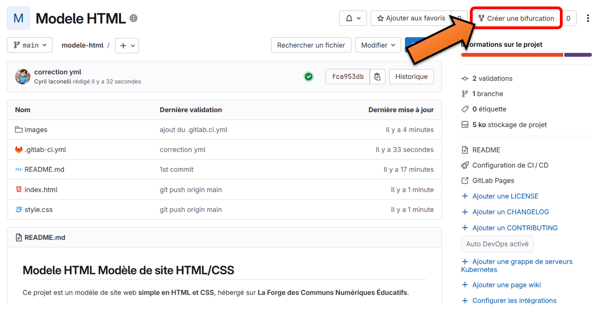
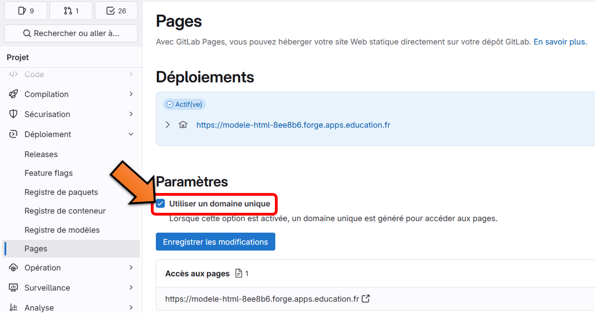

Comment procéder
- Créez une bifurcation de ce projet dans la Forge. Cette étape est bien détaillée ici.

- Modifiez la page
index.html, ajoutez des pages HTML, ajoutez des images, modifiez lestyle.css, etc. en utilisant éventuellement le WebIDE. - Conservez et ne modifiez pas le document
.gitlab-ci.yml - Simplifiez l'url de votre site-web en décohant Utiliser un domaine unique dans
Déploiement→Pages.
De quoi est constitué le dépôt ?
- d'une page
index.html(que vous pouvez modifier) - de quelques images (que vous pouvez supprimer)
- d'un document
readme.md(à modifier pour présenter votre projet sur le dépôt) - d’un style
style.css(que vous pouvez modifier) - d’un document
.gitlab-ci.yml(à conserver et ne pas modifier)
Quand utiliser ce modèle ?
Pour créer un site internet simple en HTML/CSS hébergé sur La Forge des Communs Numériques Éducatifs.
Pour créer une application web (des documents annexes, par exemple script.js, peuvent être ajoutés).
Licence
Ce projet est sous licence Creative Commons.